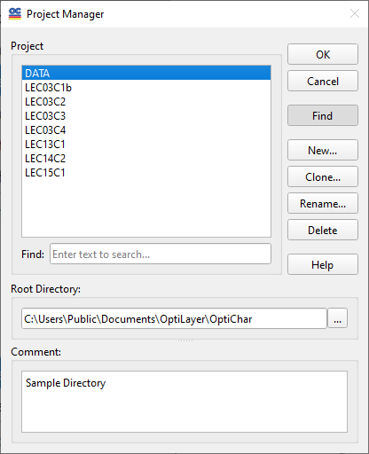

Select Directory or Project
The File Transfer feature allows the exchange of data between different problem directories, which is particularly useful since the same data files may often be utilized in various locations. To initiate the File Transfer, you first need to specify a source directory from which the data will be pulled. This facilitates the management and integration of data across multiple projects more efficiently.

The list box in this window shows the existing problem directories.
The Find button is activated to allow you to utilize the Find feature, simplifying your search using some pattern.
To choose another directory, select it in the list and press the OK button.
When using the OptiLayer software, you can select an alternative OptiLayer Root Directory to facilitate the File Transfer process. To do this, you can either choose a different directory from the corresponding combo box or initiate the Browse dialog by clicking the Browse… button.
Additionally, a helpful Comment will typically be displayed below the selection area, which serves as guidance to assist you in identifying the correct directory for the file transfer. This ensures that you can locate the appropriate files without confusion and proceed with your data exchange more effectively.